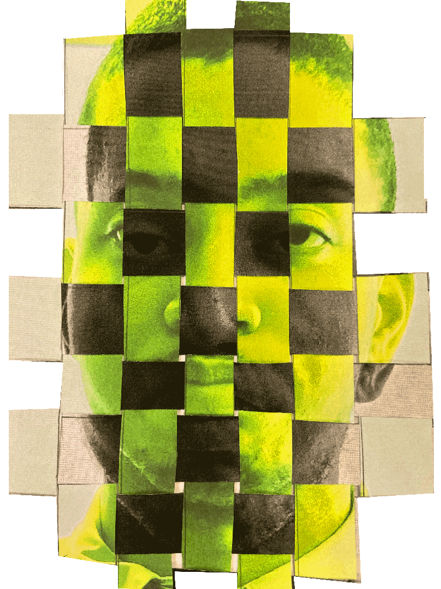

High Error Rates
Interview with
Jonathan Stribling Uss
Jonathan Stribling Uss
Transcript
Jonathan: That's a big concern that we have, is that current facial recognition technology is not very accurate. What we what we're seeing is that a lot of the tech....there's a range of different technology, whether you have kind of the more consumer grade stuff....that's what's called Amazon recognition, which is the product that Amazon sells, where you can put your photo into their database and they can tell you whether or not it's one person or another, but their error rates are actually very high and they misidentify people. And so even the highest grade, though, that's a more academic kind of facial recognition technology that's more sold by either governments or used by governments, but usually sold by Google or Facebook or kind of these larger things. The error rates are up to 34.7 percent in misidentifying people of color in particular. They're very bad at identifying people of color and women as well as children because of a number of reasons, but the most obvious one is that the facial recognition systems require the computers to basically look at millions and billions of faces and try to learn to see basically to learn to understand their characteristics. And they haven't put enough faces into the facial recognition systems that are women's faces or people of color faces or children's faces. Also, children's faces in particular change pretty, pretty significantly. So that's a huge aspect of why the error rates are so high. But that means that, you know, if you were to put a woman of color's face into the most advanced facial recognition systems, it's likely that you would misidentify that person. About a third of the time. So a third of the people would be incorrectly identified.

Programmers’ Racial Bias
Interview with
Albert Fox Cahn
Albert Fox Cahn
Transcript
Albert: It’s one of the saddest parts about facial recognition technology, there’s no reason why it had to work better for white faces than for black and brown faces, that was all bias and how the systems were made, how the training data was selected, the assumptions that a bunch of white male engineers had about how to build a program and just basically the machine learned from us and it learned to be racist. And there is no reason why it had to be that way, those are the machines that we have.

It can help law enforcement solve crimes
Interview with
Vanessa Gibsons
Vanessa Gibsons
Transcript
Vanessa: I think we have to allow law enforcement including the NYPD to use as many tools as possible, as many tools in the toolbox and resources that they can to keep crime down, to protect New Yorkers. But also respecting individual’s rights. Um when you look at some of the high profile cases of sexual assault and homicides that have happened in New York City, facial recognition has been a part of the evidence and the process of gathering, uh, evidence and building a case. And those cases obviously were very heinous. But I also think some of the lesser profile cases where you’re talking about individuals of color, or immigrant New Yorkers being surveilled at their Mosques or their churches, houses of worship, that’s certainly not what we want. Uh, but if you are a victim of a crime you should be afforded the opportunity to get justice and, and seek justice, so that you have closure and healing as a victim of a crime. And god forbid someone loses their life, there’s nothing we can do to bring that person back, but we can reassure the family that we’re doing everything possible to find the individuals or individual responsible, so that that doesn’t happen again. I think it’s a tough balance, it’s a very sensitive topic, but I think whatever the NYPD can use at its disposal we obviously would welcome that, but we would want to make sure we put precautions, and safeguards, and protections in place.